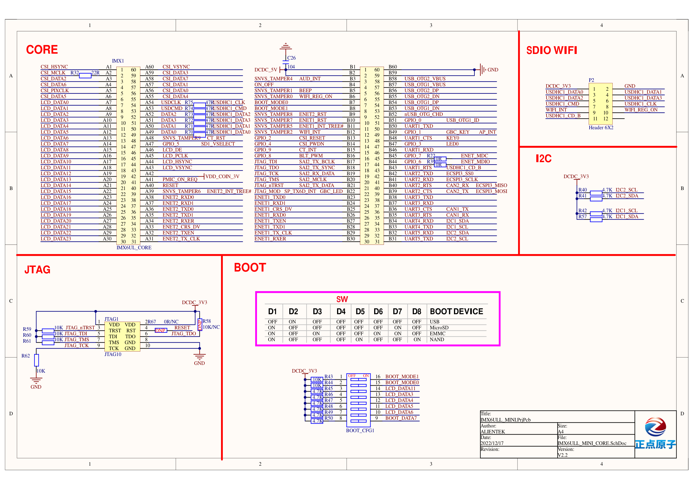

MINI 第 1 页：连接器、启动拨码、I2C 与 JTAG
从这一章开始到底板（MINI V2.2）。第 1 页（IMX6ULL_MINI_CORE.SchDoc）是全板的「总入口」：两个 60 pin 连接器把核心板的 120 个触点接进来，然后立刻分出四件事——SD 总线加 47Ω 串阻、I2C 加 4.7K 上拉、JTAG 加 10K 网络、BOOT 用 8 位拨码。这一页读懂，后面三页就都是「按功能往外接」。

新窗口打开读完这一章，你应该能
- 说出 IMX1/IMX2 与核心板 J1/J2 的对应关系，并解释为何要再画一次符号
- 解释 SD 总线为什么用 47Ω 串阻、而 I2C 用 4.7K 上拉——两种「阻抗」不是一回事
- 用上升时间公式验证 4.7K 上拉能支持多快的 I2C
- 说出 JTAG 那 5 颗 10K 电阻各自防什么
- 按 BOOT DEVICE 表拨出「从 SD 卡启动」
3.10.1为什么底板还要再画一遍连接器
核心板 p8 的连接器叫 J1/J2，底板 p1 的连接器叫 IMX1/IMX2，型号相同、脚号相同。这不是重复劳动，而是两块板各自的「接口视图」：
- 核心板视图：以「SoC 的球」为中心，告诉你每个球引到连接器哪一脚；
- 底板视图：以「底板功能」为中心，告诉你 TF 卡、LCD、CAN 分别接连接器哪一脚。
所以追一根线要「两边对看」：先在底板看到 CSI_MCLK 接 IMX1-A??，再到核心板 p8 找同名网络，得到 SoC 球号。熟练之后可以直接按网络名跳，不必记脚号。
3.10.2SD 总线：47Ω 串阻 + 47K 上拉
中上部的 R70–R75 = 47Ω 分别串在 USDCLK / USDCMD / DATA0 / DATA1 / DATA2 / DATA3 上。为什么是 47Ω？
- 源端匹配：SoC 的 SD 驱动输出阻抗约 30–40Ω，加 47Ω 接近 50Ω 走线的特征阻抗，抑制反射；
- 速率适配：SD 默认模式 25MHz、高速 50MHz，边沿不需要极快，47Ω 让上升沿变缓，EMI 下降；
- 与 47K 上拉分工：串阻管「边沿」，上拉管「默认电平」，两者互不替代。TF 卡座的 R1–R5（47K，且标 NC）就是上拉组，见 3.11 节。
注意 R70–R75 是 47Ω 而不是常见的 22Ω/33Ω：值越大边沿越慢，50MHz 下 47Ω 仍有余量，但对 100MHz 以上的 UHS 模式就不够了——这也是 MINI 只做到 SD 高速模式的原因之一。
3.10.3I2C：4.7K 上拉与上升时间
右侧 R40/R41 = 4.7K（I2C2_SCL/SDA）、R42/R57 = 4.7K（I2C1_SCL/SDA），都上拉到 DCDC_3V3。I2C 是开漏总线，上拉电阻与总线电容决定上升沿：
tr ≈ 0.847 × R × Cb
Fast Mode（400kHz）要求 tr ≤ 300ns。若 Cb=100pF：tr=0.847×4.7k×100p=40ns，余量充足；若挂 5 个器件、Cb 涨到 400pF：tr=160ns，仍合格；但若 Cb 到 800pF，tr=318ns，超标，表现为「示波器看波形圆角、偶发 NACK」。
为什么不用 10K？10K 更省电（3.3V/10K=0.33mA vs 0.7mA），但 tr 翻倍。本板选 4.7K 是「400kHz + 多器件」的折中；做 100kHz 标准模式时 10K 也够。
陷阱：I2C 上拉必须接到「与该总线 IO 同电压」的电源。若 IO 是 1.8V 域却上拉到 3.3V，会经 ESD 二极管倒灌。
3.10.4JTAG：五颗 10K 的分工
左下 JTAG 区有 R58 10K/NC、R59/R60/R61/R62 10K、R67 0R/NC，接一个 10 pin 排针（JTAG1，标 DNP）。它们的作用是「让 JTAG 脚在不接调试器时有确定电平」：
| 信号 | 电阻 | 默认 | 原因 |
|---|---|---|---|
| JTAG_TDI | R59 10K 上拉 | 1 | TDI 内部有上拉，外部加固 |
| JTAG_TMS | R60 10K 上拉 | 1 | TMS=1 时状态机不进复位 |
| JTAG_TCK | R61 10K 下拉 | 0 | 时钟悬空会拾取噪声，产生误移位 |
| JTAG_nTRST | R62 10K 上拉 | 1 | 低有效复位，默认不复位 |
| JTAG_MOD | R58 10K/NC | — | 模式选择，按需贴 |
R67 0R/NC 是 JTAG_TDO 与排针之间的可选串联，用于隔离（不接调试器时断开，避免 TDO 变成天线）。JTAG1 标 DNP 说明量产板不焊排针，只在调试版贴。
3.10.5BOOT 拨码：8 位开关 + 4.7K
右下 BOOT 区是本板最有「动手感」的部分：R43/R44 = 10K 在 BOOT_MODE0/1 上，R45–R50 = 4.7K 在 BOOT_CFG1 的若干位上，D1–D8 八位拨码决定每一位接地还是悬空。旁边的 BOOT DEVICE 表直接给出结论：
| 启动介质 | 拨码组合（示意） |
|---|---|
| Micro SD | D1–D8 全 OFF（BOOT_CFG 取默认，SD 优先） |
| USB（下载） | BOOT_MODE=01，D 组按表 |
| eMMC | 按 eMMC 表拨，配合核心板 BOM |
| NAND | 按 NAND 表拨，配合核心板 BOM |
拨码的电气本质：ON = 把该位通过 0Ω 接到 GND（读 0），OFF = 靠 4.7K 上拉（读 1）。这与核心板 47K 的「弱默认」正好配成 10:1，所以拨码能可靠覆盖核心板默认值（详见 3.8 节的分压计算）。
图上 BOOT_DATA7 ↔ LCD_DATA6 这类标注说明：拨码影响的位与 LCD 数据线是同一批球，屏初始化后这些开关就「失效」——所以拨码必须在复位前设好，运行中改无效。
3.10.6P2：6×2 SDIO WIFI 排针
右上 P2（Header 6X2） 是 12 pin 排针，接 SDIO WIFI 模块：USDHC1 的 CLK/CMD/DATA0–3、WIFI_INT、WIFI_REG_ON、SD1_VSELECT 等。旁边 C26 104 去耦、R22/R39 0R 是可选跳线。
为什么用排针而不是板载模块？认证与成本：WIFI 模块需要射频认证，做成可插拔模块，整机认证时只需换模块，不必改主板。